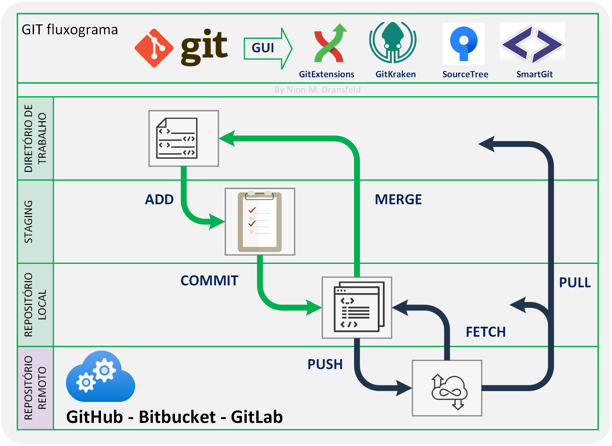

Git: Dicas e Truques
Introdução
O Git é um sistema de controle de versão conhecido como VCS (do inglês, version control system) e vem sendo amplamente utilizado no desenvolvimento de códigos para software, sites, aplicativos, aprendizado de máquina, inteligência artificial, etc. Ele foi criado por Linus Torvalds em 2005 para ajudar no desenvolvimento do kernel do Linux, mas desde então se tornou uma ferramenta essencial em muitos projetos de software.
Esta ferramenta permite que os desenvolvedores acompanhem as alterações feitas em seus arquivos ao longo do tempo, facilitando o trabalho colaborativo e o gerenciamento eficiente de versões de um projeto. O sistema do Git registra todas as alterações feitas nos arquivos, permitindo que os desenvolvedores rastreiem quem fez cada alteração, quando foi feita e seu motivo.
Além disso, o Git possui uma ampla gama de recursos, como ramificações (branches) para o desenvolvimento paralelo, fusão (merge) das ramificações, resolução de conflitos e integração com serviços de hospedagem como o GitHub, Bitbucket e GitLab (Fig. 01).
A adoção generalizada do Git e a integração com várias plataformas de desenvolvimento, como o GitHub, tornam-no uma escolha adquada para o controle de versão. Além disso, à medida que mais empresas adotam práticas de DevOps e integração contínua / entrega contínua (CI/CD), o Git, com suas características de ramificação e fusão, torna-se uma ferramenta essencial. O Git também é altamente escalável, o que significa que pode acomodar projetos que vão desde pequenos aplicativos individuais até grandes projetos corporativos.

Nesse artigo, vou apresentar uma série de dicas e truques essenciais para o Git, focados na plataforma Windows e utilizando o Git Bash como ambiente de linha de comando. Embora o enfoque seja no Windows, é importante ressaltar que muitos dos comandos e conceitos abordados também se aplicam ao Mac e ao Linux. Caso queira consultar todas as funções e ter uma melhor descrição dos comandos você pode consulta o manual no link https://git-scm.com/docs
Iniciando com GIT
Instalação
- Windows: visite o site oficial do Git https://git-scm.com e clique no botão de download para Windows e execute o arquivo.
- macOS: se você usa o macOS, pode instalar o Git usando o gerenciador de pacotes Homebrew. Primeiro, instale o Homebrew abrindo o Terminal e executando alguns comandos.
- Linux:: se você é usuário do Ubuntu ou Debian, o Git provavelmente está disponível via
apt. Para instalá-lo, abra um terminal e execute:sudo apt-get install git.
Configurações iniciais: nome e email
Ao utilizar o Git, é recomendável configurar seu nome e endereço de e-mail. Essas informações são registradas nos commits (confirmações) que você realiza em um repositório Git. Existem algumas razões pelas quais você deve fornecer esses detalhes para identificação do autor e rastreamento de contribuições. Para configurar seu nome e endereço de e-mail no Git, você pode utilizar os seguintes comandos no terminal:
git config –global user.name "Seu Nome"git config –global user.email "seuemail@exemplo.com"Comandos UNIX no GIT
O Git foi originalmente desenvolvido para ser usado no Linux, um sistema operacional do tipo Unix, por isso é natural que ele use uma interface de linha de comando baseada em Unix. Abaixo algumas funções úteis:
ls: Lista o conteúdo do diretório corrente;pwd: significa “print working directory”, este comando retorna o caminho absoluto do diretório atual;cd: significa “change directory”e é usado para mudar o diretório atual. Em Unix,cd .representa o diretório atual ecd ..representa o diretório pai;touch: atualiza a data de um arquivo (o cria, se não existir).
Commits atômicos
Commit atômico é um conceito em controle de versão que sugere na qual cada commit deve ser uma unidade pequena e que todos os seus arquivos estejam dentro do mesmo contexto. Isso significa que cada commit deve representar uma única alteração lógica no código - seja corrigindo um bug ou adicionando uma nova funcionalidade.
Os commits atômicos são uma prática recomendada em controle de versão e são importantes por várias razões:
- Facilita o entendimento do histórico do projeto;
- Torna a resolução de conflitos mais fácil;
- Permite reverter mudanças facilmente;
- Facilita a revisão de código;
Alerta: Dentro de um repositório Git, não se deve criar outro repositório Git. Isso ocorre porque o Git trata todo o diretório do repositório como uma unidade indivisível e não suporta a criação de repositórios dentro dele. Criar outro repositório Git dentro de um repositório existente pode levar a vários problemas e erros, pois o Git não foi projetado para lidar com aninhamento de repositórios. Aqui estão alguns possíveis erros que podem ocorrer: conflitos de versionamento, problemas de sincronização, dificuldades na colaboração e perda de dados. Para verificar se você está criando indevidamente um repositório dentro de um repositório existente, você pode executar o seguinte comando no terminal dentro do diretório do seu projeto: git status.
Branches
No Git, uma branch é uma linha de desenvolvimento separada que permite que você trabalhe em recursos ou correções de bugs sem interferir no código principal. Cada branch é uma ramificação independente do histórico de commits e pode ser mesclada (merged) com outras branches posteriormente. As branches são úteis para organizar o trabalho em equipe, permitindo que várias pessoas trabalhem em diferentes partes do projeto simultaneamente.
Aqui estão alguns dos principais comandos relacionados a branches no Git, juntamente com suas descrições:
git branch: Exibe uma lista de todas as branches no repositório. O asterisco (*) indica a branch atualmente ativa.git branch <nome_branch>: Cria uma nova branch com o nome especificado.git switch <nome_branch>: É um comando projetado para a tarefa de mudar de branch, simplificando o uso em relação ao git checkout. O git switch não executa ações adicionais, apenas muda a branch atual.git switch -c <nome_branch>: cria uma nova branch a partir da branch atual e muda para ela, tudo em um único comando, permitindo que você crie e mude para uma nova branch de forma rápida e conveniente.git merge <nome_branch>: Incorpora as alterações da branch especificada na branch atual. Isso cria um novo commit de merge no histórico.git branch -d <nome_branch>: Exclui a branch especificada após mesclá-la com sucesso em outra branch.git branch -D <nome_branch>: Força a exclusão da branch especificada, mesmo que as alterações não tenham sido mescladas.git branch -m <nome_antigo> <nome_novo>: Renomeia a branch especificada.git branch -r: Exibe uma lista das branches remotas disponíveis.git push <origin> <nome_branch>: Envia a branch especificada para o repositório remoto.git pull <origin> <nome_branch>: Atualiza a branch local com as alterações mais recentes do repositório remoto.git log: é um comando usado no sistema de controle de versão Git que exibe um histórico de commits que levaram ao estado atual do código. Ele mostra o autor, a data e a mensagem do commit, ajudando a rastrear as mudanças e entender a evolução do projeto.
Outros comandos
git commit -a -m: adiciona automaticamente todas as alterações nos arquivos rastreados e faz um commit com uma mensagem específica, permitindo que você realize o commit rapidamente sem precisar usar o comando git add separadamente;git init: cria um novo repositório do Git. Ele pode ser usado para converter um projeto existente e não versionado em um repositório do Git ou inicializar um novo repositório vazio.git diff branch1..branch2: Compara a ponta das duas ramificações (branch), para visualizar as modificações;git checkout HEAD\~1: é um comando do Git usado para alterar o estado do repositório Git para o commit anterior ao commit atual;git --version: isso deve retornar a versão do Git que você instalou;ctrl + l: é o comando no teclado que limpa a tela do terminal do git.
Git Restore
A partir da versão 2.23 do Git, o comando git restore é usado para restaurar conteúdos de arquivos no diretório de trabalho e na área de preparação (staging area) do Git. Ele pode ser usado para descartar modificações em arquivos que ainda não foram confirmadas em um commit ou para recuperar arquivos excluídos.
A sintaxe básica do comando git restore é a seguinte:
git restore <opções> <arquivo>O comportamento exato do comando git restore pode variar dependendo da versão do Git que você está utilizando. É recomendado verificar a documentação oficial do Git ou executar git restore --help para obter informações detalhadas sobre as opções e comportamentos específicos da versão do Git que você está utilizando.
Git Reset
O comando git reset é usado no Git para alterar a posição do branch (ramificação) atual e desfazer commits. Ele permite reverter o histórico do Git, descartando commits anteriores ou movendo o branch para um commit específico.
Existem diferentes opções de uso do comando git reset. Aqui estão algumas das formas comuns de uso:
Reset “soft” (suave): O comando git reset --soft desfaz o commit mais recente, mas mantém as alterações do commit no diretório de trabalho e na área de preparação (staging area). Isso permite que você faça alterações adicionais e faça um novo commit com as alterações corrigidas. css Copy code git reset –soft HEAD~1
Reset “mixed” (padrão): O comando git reset --mixeddesfaz o commit mais recente e remove as alterações do commit da área de preparação (staging area), mas mantém as alterações no diretório de trabalho. Isso permite que você revise as alterações novamente e escolha quais arquivos deseja preparar para um novo commit. css Copy code git reset –mixed HEAD~1
Reset “hard” (rígido): O comando git reset --hard desfaz completamente o commit mais recente, descartando todas as alterações do commit e do diretório de trabalho. Isso reverte o repositório Git para o estado do commit anterior e exclui todas as alterações não confirmadas. É importante ressaltar que, ao usar o comando git reset, os commits desfeitos são excluídos permanentemente do histórico. Portanto, tenha cuidado ao usá-lo e verifique se você tem um backup ou está confortável em perder esses commits.
Recomenda-se verificar a documentação oficial do Git ou executar git reset --help para obter informações detalhadas sobre as opções e comportamentos específicos do comando “git reset” na versão do Git que você está utilizando.
Git Revert
O comando “git revert” é usado no Git para criar um novo commit que desfaz as alterações de um ou mais commits anteriores. Ao contrário do comando “git reset”, que remove os commits do histórico, o “git revert” desfaz as alterações de um commit existente criando um novo commit que reverte as modificações introduzidas.
A sintaxe básica do comando git revert é a seguinte:
git revert <commit> Ao executar o comando git revert, o Git cria um novo commit que reverte as alterações introduzidas pelo commit especificado. Esse novo commit é adicionado ao histórico, desfazendo as modificações feitas pelo commit original, mas preservando o histórico completo do projeto.
O comando git revert pode aceitar várias opções para personalizar o comportamento:
n ou –no-commit: Realiza a revert sem criar automaticamente um novo commit. Isso permite que você faça alterações adicionais antes de confirmar as reversões em um novo commit.
m parent-number: Especifica qual parente de um commit de merge deve ser revertido. O parente é numerado a partir de 1, e o commit de merge é especificado usando seu hash.
s ou –signoff: Adiciona uma assinatura digital na mensagem de confirmação do revert.
Essas são apenas algumas opções comuns, e há mais opções disponíveis. Recomenda-se consultar a documentação oficial do Git ou executar git revert --help para obter informações mais detalhadas sobre as opções e comportamentos específicos do comando git revert na versão do Git que você está utilizando.
O git revert é uma maneira segura de desfazer alterações em commits anteriores sem alterar o histórico do projeto, sendo útil quando você deseja manter um registro completo de todas as alterações e garantir que a colaboração no projeto não seja afetada.
Git Stash
O comando “git stash” é uma funcionalidade do sistema de controle de versão Git que permite aos desenvolvedores salvar temporariamente as alterações feitas em seu repositório de trabalho, sem precisar fazer um commit completo. O “stash” pode ser visto como uma área de armazenamento temporário para alterações não concluídas.
Posteriormente, quando desejar retomar as alterações salvas, você pode usar os comandos git stash list para ver a lista de stashes disponíveis e git stash apply ou git stash pop para aplicar novamente as alterações salvas no seu diretório de trabalho. A diferença entre os comandos “apply” e “pop” é que o “apply” mantém o stash na lista, enquanto o “pop” remove o stash após aplicar as alterações.
Git Reflog
O git reflog é um comando útil do Git que registra quando as pontas dos ramos e outras referências foram atualizadas no repositório local. Ele ajuda você a entender a história de um repositório de uma maneira mais granular do que git log, porque também registra quando você faz checkout para outro ramo, quando um commit é alterado (por exemplo, com git commit --amend), e assim por diante.
Segue alguns usos comuns do git reflog:
Recuperação de commits perdidos: O Git tem um sistema de garbage collection que limpa commits inacessíveis de tempos em tempos, mas antes disso, você pode usar o
git reflogpara encontrar commits perdidos. Isso é útil quando você exclui um ramo por engano, por exemplo.Desfazer rebase: Um comando git rebase pode ser uma operação complicada que às vezes dá errado. Se você deseja desfazer um rebase, pode usar o
git reflogpara encontrar o estado do seu ramo antes do rebase e retornar a esse estado.
O comando git reflog exibe uma lista de todos os pontos na história do seu HEAD. Para cada entrada, ele mostra um hash de commit, a ação que levou a esse estado (como um commit, rebase, checkout etc.), e uma referência para essa entrada na forma de HEAD@{n}, onde n é o número de passos atrás nesse ponto na história.
O git reflog mantém um registro das últimas ações no Git que modificaram o HEAD, incluindo commits, checkouts e outros. Por padrão, o Git mantém esses registros por 90 dias. Esse período de 90 dias é chamado de período de “expiração” do reflog.
Rebasing x Merging
Rebasing” e “Merging” são duas estratégias diferentes no Git para integrar mudanças de uma branch (ramificação) para outra. Ambos são usados para manter o seu código sincronizado com o trabalho de outros desenvolvedores, mas funcionam de maneiras ligeiramente diferentes e são melhores em situações diferentes.
Rebasing (Rebase): O comando
git rebasemove ou combina uma sequência de commits para uma nova base de commit. Ele é útil para fazer sua feature branch “atualizada” com as últimas mudanças de outra branch (como a main ou master). Com o rebase, os commits da feature branch são aplicados na branch base, um por um, como se eles tivessem sido criados de novo. Isso resulta em um histórico de commits linear, o que pode ser mais fácil de entender.Merging (Merge): O comando
git mergepega o conteúdo de uma branch de origem e a integra com a branch de destino. Um novo commit de merge é criado que aponta para os dois commits, preservando o histórico de commits e a relação entre as branches. Isso mantém a história completa do projeto, incluindo todas as ramificações e mesclagens, mas pode ser mais difícil de navegar devido à sua não linearidade.
A diferença principal entre os dois (rebase e merge) é que o rebase cria um histórico de commits linear, “recriando” os commits, enquanto o merge preserva o histórico exato e cria um novo commit de merge. A escolha entre um e outro depende de fatores como a complexidade do projeto, a necessidade de manter um histórico limpo e linear versus um histórico completo e exato, e as preferências da equipe.
O comando git rebase -i HEAD é utilizado para iniciar um processo de rebase interativo. O rebase interativo é uma funcionalidade do Git que permite modificar uma sequência de commits existente de várias formas. A opção -i no comando significa “interativo”, o que significa que o Git abrirá um editor de texto com uma lista dos últimos commits, permitindo que você escolha exatamente o que quer fazer com cada um.
O termo HEAD é uma referência ao commit mais recente na branch atual. Portanto, git rebase -i HEAD começará um rebase interativo que, por padrão, não inclui nenhum commit, pois você está tentando rebase na mesma posição do HEAD. Normalmente, você especificaria um número de commits antes do HEAD ou uma referência a outro commit, como HEAD~3 ou HEAD^, para iniciar um rebase interativo dos últimos 3 commits ou do último commit, respectivamente.
Durante um rebase interativo, você pode fazer várias coisas, como:
- pick: usar um commit como está.
- reword: usar o commit, mas alterar a mensagem do commit.
- edit: usar o commit, mas parar para que você possa modificar os arquivos e/ou o commit.
- squash: usar as alterações do commit, mas mesclá-las com o commit anterior.
- fixup: como “squash”, mas descarta a mensagem do commit.
- drop: descartar o commit. Essa flexibilidade faz do rebase interativo uma ferramenta poderosa para limpar o histórico de commits antes de compartilhar suas alterações com outros.
Git Config
O comando git config é uma parte essencial do Git, usado para configurar as opções específicas do usuário, como email, algoritmo preferido para diff, nome de usuário e tipo de formato, entre outras coisas. Essas informações são armazenadas em três locais diferentes:
/etc/gitconfig: Contém valores para todos os usuários no sistema e todos os seus repositórios. Se você passar a opção –system para git config, ele lê e escreve a partir deste arquivo.
~/.gitconfig ou ~/.config/git/config: Especificamente para você, o usuário logado. Você pode fazer o Git ler e escrever para este arquivo passando a opção –global.
config no diretório Git (ou seja, .git/config) de qualquer repositório que você esteja usando: Específico para esse único repositório. Cada nível sobrescreve os valores no nível anterior, então valores em .git/config têm precedência sobre /etc/gitconfig.
O comando git config --list lista as configurações do Git que estão atualmente configuradas.
Objetos Git
O Git é um sistema de controle de versão que mantém o histórico de alterações em arquivos e diretórios em um repositório. Para fazer isso, o Git usa um sistema de armazenamento de objetos que contém quatro tipos principais de objetos: blob, tree, commit e tag.
1. Blob: O tipo de objeto mais básico no Git é o blob. Um objeto blob é um arquivo com dados, mas sem metadados (como nome de arquivo ou permissões). Cada versão de cada arquivo em seu repositório Git é armazenada como um objeto blob separado.
2. Tree: Um objeto de tree (árvore) no Git é essencialmente análogo a um diretório. Ele representa uma estrutura de diretório de arquivos e outros diretórios. Um objeto tree contém um ou mais entradas de tree, cada uma das quais contém uma referência a um blob ou tree, juntamente com o nome do arquivo, permissões e o bit ‘execute’.
3. Commit: Um objeto de commit contém metadados para cada alteração introduzida no repositório, incluindo o autor, o committer (que pode ser diferente do autor), a mensagem de commit e um ponteiro para o objeto tree que representa a estrutura de diretório de nível superior para o projeto. Cada commit também contém um ou mais ponteiros para os commit(s) pai(s) que representam o(s) estado(s) anterior(es) do projeto.
4. Tag: Uma tag é uma referência a um objeto de commit, usada geralmente para marcar pontos específicos no histórico do repositório como uma versão específica de um projeto. Tags podem ser leves (apontando diretamente para um commit) ou anotadas (armazenadas como objetos completos com um apontador para um commit, um nome de tag, uma mensagem de tag e um tagger).
Esses quatro tipos de objetos (blob, tree, commit e tag), juntamente com referências que apontam para objetos de commit (como branches e HEAD), formam a estrutura fundamental do sistema de armazenamento de dados do Git.
Excluir um repositório Git
Se surgir a necessidade de excluir um repositório Git e manter os arquivos, você pode fazer isso excluindo a pasta oculta .git, que é onde todas as informações do repositório Git são armazenadas. Porém, tenha muito cuidado, pois isso removerá todo o histórico de versões do Git para este repositório. Siga os passos abaixo para excluir o repositório Git:
1- Navegue até o diretório que contém o repositório Git que você deseja excluir.
cd /caminho/para/o/diretorio2- Exclua a pasta .git dentro desse diretório.
rm -rf .gitDiferentes contas Git para diferentes projetos
Configurar duas contas Git para diferentes projetos pode ser feito de forma automática usando a funcionalidade de “inclusão condicional” no arquivo de configuração do Git (~/.gitconfig). Primeiro, é necessário configurar globalmente sua conta principal do Git com seu nome de usuário e email usando o comando git config. Em seguida, você pode criar uma inclusão condicional no arquivo ~/.gitconfig para especificar a configuração da segunda conta com base no diretório do projeto. Ao navegar para a pasta do segundo projeto, o Git utilizará automaticamente as configurações definidas para essa conta específica, como o nome do usuário e o email, enquanto em outros projetos continuará usando as configurações globais da primeira conta. Isso simplifica a gestão de várias contas Git em diferentes projetos, garantindo que as credenciais corretas sejam usadas em cada caso, sem a necessidade de alternar manualmente entre elas.
Para criar a inclusão condicional no arquivo de configuração global, abra o arquivo de configuração do Git global ~/.gitconfig em um editor de texto. Adicione ou edite a seção [includeIf] da seguinte forma:
[includeIf "gitdir:/caminho/para/sua/segunda/pasta/"]
path = ~/.gitconfig-segunda-contaPara configurar contas do GitHub diferentes com o Git de forma automática, você pode utilizar o mesmo conceito de inclusão condicional, para mais detalhes de como fazer nos links abaixo:
Integração com plataformas de hospedagem
GitHub, Bitbucket e GitLab são plataformas baseadas em nuvem que fornecem hospedagem de repositórios Git, permitindo que os desenvolvedores armazenem e compartilhem seus códigos, colaborem em projetos e rastreiem e controlem alterações no código. GitHub é a plataforma mais popular, hospedando milhões de repositórios de desenvolvedores e organizações em todo o mundo. Ele não só suporta controle de versão Git, mas também fornece funcionalidades adicionais, como pull requests, issues de rastreamento, actions para automação de CI/CD e integração com muitas outras ferramentas e plataformas.
Copiando (clonar) um repositorio existente:
git clone https://github.com/user/example.gitgit clone: Este comando é usado para criar uma cópia local de um repositório remoto. Quando você executa git clone, o Git cria um novo diretório no seu sistema local, inicializa um repositório Git nesse diretório, puxa todo o histórico de commits do repositório remoto e verifica o último commit para o seu diretório de trabalho. Basicamente, é uma maneira de obter uma cópia completa de um projeto existente.
git remote: Este comando é usado para gerenciar as conexões com repositórios remotos. Ele permite que você crie, visualize e delete conexões para outros repositórios. Quando você clona um repositório, o Git automaticamente adiciona esse repositório como um “remote” chamado “origin”, permitindo que você interaja com o repositório original a partir do qual você clonou. Você pode adicionar mais remotos usando o comando git remote add, e pode sincronizar suas alterações com remotos usando comandos como git push e git pull.
git remote add usptream: Quando você adiciona um “upstream” ao seu repositório Git, você está criando uma conexão com um repositório remoto a partir do qual você deseja buscar ou puxar mudanças. Isso é útil, por exemplo, quando você fez um “fork” de um repositório em um serviço como o GitHub, e quer manter o seu fork sincronizado com as alterações do repositório original.Depois de adicionar o upstream, você pode buscar as alterações do repositório original com ‘git fetch upstream’, e pode mesclar essas alterações em sua branch atual com ‘git merge upstream/branch_name’.
git fetch: Este comando baixa as alterações do repositório remoto para o seu repositório local, mas não as mescla com o seu código nem modifica o seu código atual. Isso permite que você veja as alterações recentes no repositório remoto, sem misturá-las com o seu trabalho atual. Se você quiser integrar as mudanças no seu código, você precisará fazer um git merge após o fetch.
git pull: Este comando é essencialmente uma combinação de
git fetchseguido degit merge. Ou seja, ele baixa as alterações do repositório remoto e as mescla automaticamente com o seu código atual. É útil quando você sabe que quer atualizar o seu código para corresponder ao estado mais recente do repositório remoto.
A integração dessas plataformas baseadas em nuvem com o Git permite a colaboração e o controle de versão eficientes, facilitando o desenvolvimento de software ágil e o uso de práticas de DevOps. Além disso, elas também desempenham um papel crítico no suporte a equipes remotas, já que os desenvolvedores podem colaborar em projetos independentemente de sua localização geográfica.
“Fetching” e “Pulling” são dois conceitos importantes no Git relacionados à obtenção de dados de repositórios remotos. A diferença entre os dois é que git fetch permite que você veja as alterações antes de decidir se quer integrá-las ou não, enquanto git pull baixa as alterações e as mescla com o seu código imediatamente (Fig. 01).
#GitTips #GitTricks #GitBestPractices #VersionControl #GitCommands #GitAdvanced